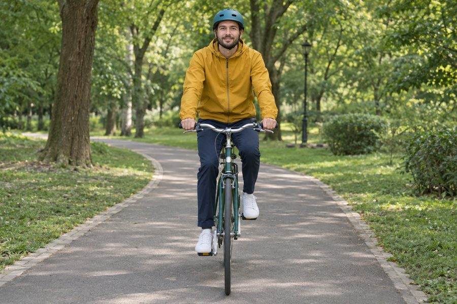

Why I Ride

Cycling in the park is one of the most enjoyable outdoor activities I know. Whether I am riding on a sunny afternoon or exploring a new trail, biking is a simple way to stay active and connect with nature. The fresh air, the green surroundings, and the quiet atmosphere make park cycling an ideal break from a busy work week.
I started riding as a way to clear my head after long days in front of a screen. Over time it became a habit. A thirty-minute loop after work now gives me more energy than another cup of coffee, and weekend rides have become my favorite way to explore the city's green spaces.
This site collects what I have learned: why park riding is worth your time, how to choose a trail, and what to bring before you head out.
Benefits of Riding in the Park
- Low impact exercise: cycling builds leg strength and endurance without stressing your joints.
- Better mood: time outdoors among trees is linked to lower stress and better focus.
- Safer than the road: park paths keep you away from heavy car traffic.
- Easy to start: any working bike and a helmet are enough for a first ride.